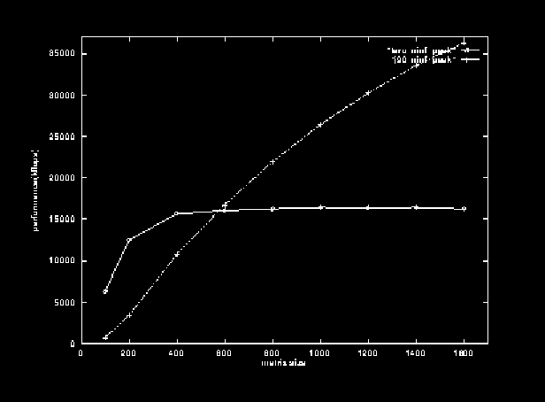

* hpc - taro ninf_call matrix size kflops 100 6307 200 12476 400 15647 600 16040 800 16236 1000 16425 1200 16347 1400 16423 1600 16214 * hpc - j90 ninf_call matrix size kflops 100 688 200 3404 400 10762 600 16728 800 21933 1000 26405 1200 30211 1400 33546 1600 36284